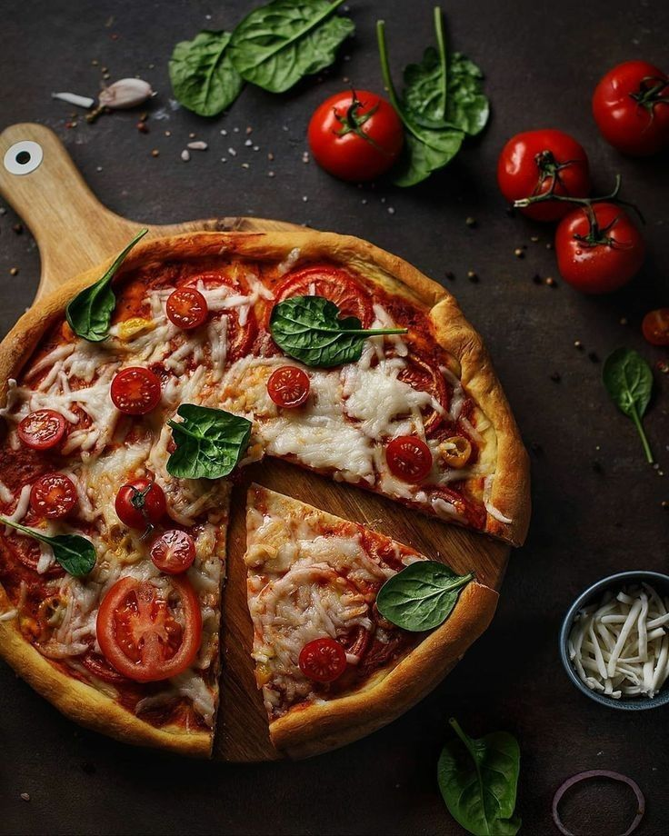

Accueil
Recette
Catégorie
Principal
Dessert
Entrée
Pizza
Catégorie :
Plat Principal
Temps de préparation :
12-15min
Ingrédients

Pâte
Sauce tomate
Mozzarella
Légumes (champignons)
Viandes (poulet..)
Extras (parmesan..)
Préparation
Préparer la pâte et laisser lever.
Préparer la sauce tomate et laisser mijoter.
Étaler la pâte, ajouter la sauce et la mozzarella.
Ajouter les légumes et viandes.
Cuire à 220°C pendant 12-15 minutes.
Ajouter des extras et servir.